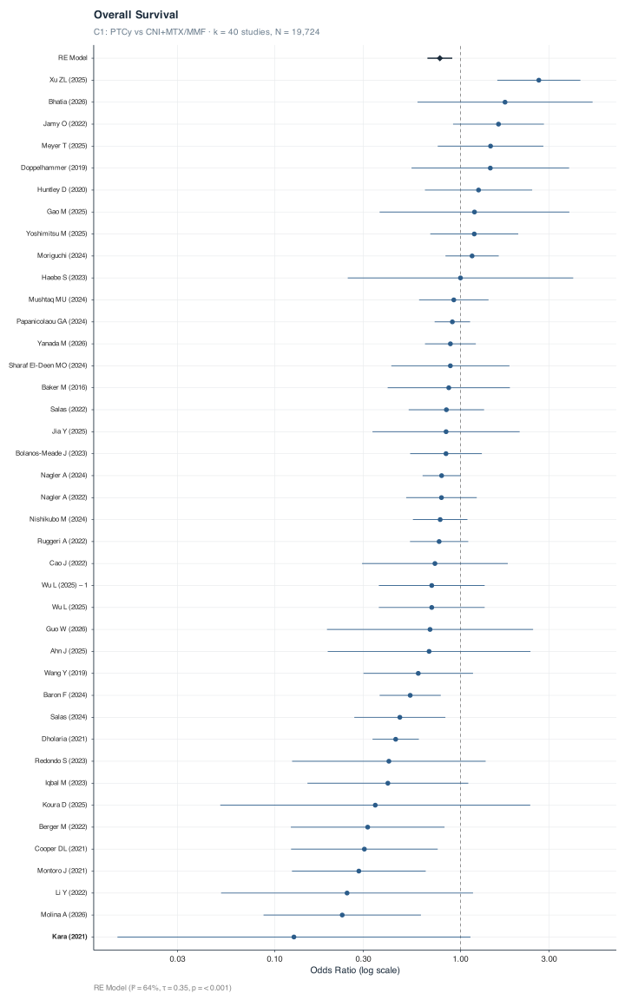
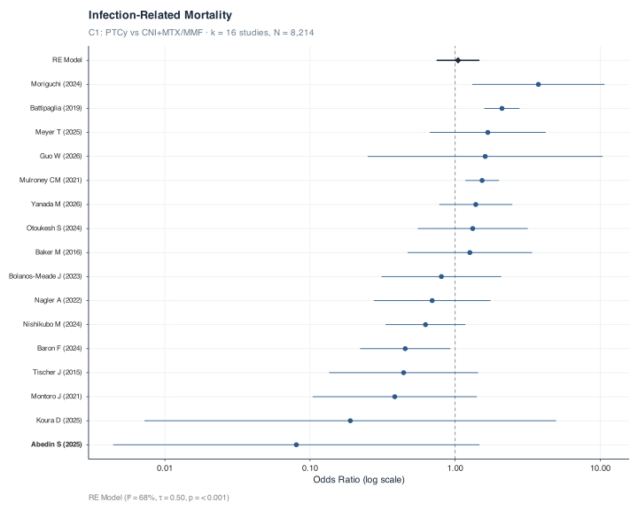

Show code
forest_study(c1_os, studies_df, "Overall Survival", "C1: PTCy vs CNI+MTX/MMF")
Study-level forest plots show individual study odds ratios with 95% confidence intervals from frequentist random-effects meta-analysis (REML estimator). The pooled estimate is displayed as a diamond at the top. OR < 1 favours PTCy for all outcomes.

---
title: "Study-Level Forest Plots"
---
```{r}
#| label: setup
#| include: false
source("_common.R")
studies_df <- read_csv(file.path(extract_dir, "studies.csv"), show_col_types = FALSE)
# C1 paired data
c1_os <- read.csv(file.path(model_dir, "data_c1_os.csv"))
c1_nrm <- read.csv(file.path(model_dir, "data_c1_nrm.csv"))
c1_agvhd <- read.csv(file.path(model_dir, "data_c1_agvhd.csv"))
c1_cmv <- read.csv(file.path(model_dir, "data_c1_cmv.csv"))
c1_bsi <- read.csv(file.path(model_dir, "data_c1_bsi.csv"))
c1_ifi <- read.csv(file.path(model_dir, "data_c1_ifi_any.csv"))
c1_rrm <- tryCatch(read.csv(file.path(model_dir, "data_c1_rrm.csv")), error = function(e) NULL)
c1_bk <- tryCatch(read.csv(file.path(model_dir, "data_c1_bk.csv")), error = function(e) NULL)
c1_irm <- tryCatch(read.csv(file.path(model_dir, "data_c1_irm.csv")), error = function(e) NULL)
c1_cgvhd_f <- tryCatch(read.csv(file.path(model_dir, "data_c1_cgvhd_ms.csv")), error = function(e) NULL)
# C2 paired data
c2_os <- read.csv(file.path(model_dir, "data_c2_os.csv"))
c2_nrm <- read.csv(file.path(model_dir, "data_c2_nrm.csv"))
c2_agvhd <- read.csv(file.path(model_dir, "data_c2_agvhd.csv"))
c2_cmv <- read.csv(file.path(model_dir, "data_c2_cmv.csv"))
c2_rrm <- tryCatch(read.csv(file.path(model_dir, "data_c2_rrm.csv")), error = function(e) NULL)
c2_bk <- tryCatch(read.csv(file.path(model_dir, "data_c2_bk.csv")), error = function(e) NULL)
c2_irm <- tryCatch(read.csv(file.path(model_dir, "data_c2_irm.csv")), error = function(e) NULL)
c2_cgvhd_f <- tryCatch(read.csv(file.path(model_dir, "data_c2_cgvhd_ms.csv")), error = function(e) NULL)
```
Study-level forest plots show individual study odds ratios with 95% confidence intervals from frequentist random-effects meta-analysis (REML estimator). The pooled estimate is displayed as a diamond at the top. OR \< 1 favours PTCy for all outcomes.
## Comparison 1: PTCy vs CNI+MTX/MMF {#sec-c1}
### Overall Survival
```{r}
#| label: fig-forest-c1-os
#| fig-cap: "Forest plot — Overall survival, C1."
#| fig-height: !expr max(6, nrow(c1_os) * 0.35 + 2)
#| fig-width: 10
forest_study(c1_os, studies_df, "Overall Survival", "C1: PTCy vs CNI+MTX/MMF")
```
### Non-Relapse Mortality
```{r}
#| label: fig-forest-c1-nrm
#| fig-cap: "Forest plot — Non-relapse mortality, C1."
#| fig-height: !expr max(5, nrow(c1_nrm) * 0.35 + 2)
#| fig-width: 10
forest_study(c1_nrm, studies_df, "Non-Relapse Mortality", "C1: PTCy vs CNI+MTX/MMF")
```
### Acute GVHD Grade II–IV
```{r}
#| label: fig-forest-c1-agvhd
#| fig-cap: "Forest plot — Acute GVHD grade II–IV, C1."
#| fig-height: !expr max(5, nrow(c1_agvhd) * 0.35 + 2)
#| fig-width: 10
forest_study(c1_agvhd, studies_df, "Acute GVHD Grade II\u2013IV", "C1: PTCy vs CNI+MTX/MMF")
```
### Chronic GVHD Moderate-Severe
```{r}
#| label: fig-forest-c1-cgvhd
#| fig-cap: "Forest plot — Chronic GVHD moderate-severe, C1."
#| fig-height: 10
#| fig-width: 10
if (!is.null(c1_cgvhd_f)) forest_study(c1_cgvhd_f, studies_df, "Chronic GVHD Moderate-Severe", "C1: PTCy vs CNI+MTX/MMF")
```
### CMV Reactivation
```{r}
#| label: fig-forest-c1-cmv
#| fig-cap: "Forest plot — CMV any reactivation, C1."
#| fig-height: !expr max(5, nrow(c1_cmv) * 0.35 + 2)
#| fig-width: 10
forest_study(c1_cmv, studies_df, "CMV Any Reactivation", "C1: PTCy vs CNI+MTX/MMF")
```
### Bloodstream Infection
```{r}
#| label: fig-forest-c1-bsi
#| fig-cap: "Forest plot — Bloodstream infection, C1."
#| fig-height: !expr max(4, nrow(c1_bsi) * 0.35 + 2)
#| fig-width: 10
forest_study(c1_bsi, studies_df, "Bloodstream Infection", "C1: PTCy vs CNI+MTX/MMF")
```
### Invasive Fungal Infection
```{r}
#| label: fig-forest-c1-ifi
#| fig-cap: "Forest plot — Invasive fungal infection, C1."
#| fig-height: !expr max(4, nrow(c1_ifi) * 0.35 + 2)
#| fig-width: 10
forest_study(c1_ifi, studies_df, "Invasive Fungal Infection", "C1: PTCy vs CNI+MTX/MMF")
```
### Relapse-Related Mortality
```{r}
#| label: fig-forest-c1-rrm
#| fig-cap: "Forest plot — Relapse-related mortality, C1."
#| fig-height: 12
#| fig-width: 10
if (!is.null(c1_rrm)) forest_study(c1_rrm, studies_df, "Relapse-Related Mortality", "C1: PTCy vs CNI+MTX/MMF")
```
### BK Virus Reactivation
```{r}
#| label: fig-forest-c1-bk
#| fig-cap: "Forest plot — BK virus reactivation, C1."
#| fig-height: 6
#| fig-width: 10
if (!is.null(c1_bk)) forest_study(c1_bk, studies_df, "BK Virus Reactivation", "C1: PTCy vs CNI+MTX/MMF")
```
### Infection-Related Mortality
```{r}
#| label: fig-forest-c1-irm
#| fig-cap: "Forest plot — Infection-related mortality, C1."
#| fig-height: 8
#| fig-width: 10
if (!is.null(c1_irm)) forest_study(c1_irm, studies_df, "Infection-Related Mortality", "C1: PTCy vs CNI+MTX/MMF")
```
---
## Comparison 2: PTCy vs ATG {#sec-c2}
### Overall Survival
```{r}
#| label: fig-forest-c2-os
#| fig-cap: "Forest plot — Overall survival, C2."
#| fig-height: !expr max(4, nrow(c2_os) * 0.35 + 2)
#| fig-width: 10
forest_study(c2_os, studies_df, "Overall Survival", "C2: PTCy vs ATG")
```
### Non-Relapse Mortality
```{r}
#| label: fig-forest-c2-nrm
#| fig-cap: "Forest plot — Non-relapse mortality, C2."
#| fig-height: !expr max(4, nrow(c2_nrm) * 0.35 + 2)
#| fig-width: 10
forest_study(c2_nrm, studies_df, "Non-Relapse Mortality", "C2: PTCy vs ATG")
```
### Acute GVHD Grade II–IV
```{r}
#| label: fig-forest-c2-agvhd
#| fig-cap: "Forest plot — Acute GVHD grade II–IV, C2."
#| fig-height: !expr max(4, nrow(c2_agvhd) * 0.35 + 2)
#| fig-width: 10
forest_study(c2_agvhd, studies_df, "Acute GVHD Grade II\u2013IV", "C2: PTCy vs ATG")
```
### Chronic GVHD Moderate-Severe
```{r}
#| label: fig-forest-c2-cgvhd
#| fig-cap: "Forest plot — Chronic GVHD moderate-severe, C2."
#| fig-height: 5
#| fig-width: 10
if (!is.null(c2_cgvhd_f)) forest_study(c2_cgvhd_f, studies_df, "Chronic GVHD Moderate-Severe", "C2: PTCy vs ATG")
```
### CMV Reactivation
```{r}
#| label: fig-forest-c2-cmv
#| fig-cap: "Forest plot — CMV any reactivation, C2."
#| fig-height: !expr max(4, nrow(c2_cmv) * 0.35 + 2)
#| fig-width: 10
forest_study(c2_cmv, studies_df, "CMV Any Reactivation", "C2: PTCy vs ATG")
```
### Relapse-Related Mortality
```{r}
#| label: fig-forest-c2-rrm
#| fig-cap: "Forest plot — Relapse-related mortality, C2."
#| fig-height: 6
#| fig-width: 10
if (!is.null(c2_rrm)) forest_study(c2_rrm, studies_df, "Relapse-Related Mortality", "C2: PTCy vs ATG")
```
### BK Virus Reactivation
```{r}
#| label: fig-forest-c2-bk
#| fig-cap: "Forest plot — BK virus reactivation, C2."
#| fig-height: 5
#| fig-width: 10
if (!is.null(c2_bk)) forest_study(c2_bk, studies_df, "BK Virus Reactivation", "C2: PTCy vs ATG")
```
### Infection-Related Mortality
```{r}
#| label: fig-forest-c2-irm
#| fig-cap: "Forest plot — Infection-related mortality, C2."
#| fig-height: 5
#| fig-width: 10
if (!is.null(c2_irm)) forest_study(c2_irm, studies_df, "Infection-Related Mortality", "C2: PTCy vs ATG")
```